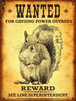

Estava concluindo uma sindicância hoje no trabalho, para pedirmos uma promoção por Ato de Bravura de um policial, em virtude de uma determinada ocorrência, quando ele enfrentou a tiros um dos milhares traficantes que habitam a cidade, e acabou ferido. Corriqueiro, nada demais para a habitualidade do serviço policial no Rio, mas pedir não custa nada.
Daí que, para melhor ilustrar a situação, comecei a procurar no Google notícias da época (uns 8 meses atrás), e lembrei-me que um jornal online publicou uma matéria com as fotos dos “bandidos mais procurados do Rio de Janeiro”. O resultado das buscas não surpreendeu, mas pareceu engraçado, para quem trabalha na segurança pública: centenas de resultados, com nomes de diversos criminosos que tornaram-se verdadeiros astros dignos de filmes hollywoodianos, graças à ajuda da imprensa.
A segurança pública no Brasil, de maneira geral, pode ser considerada propositalmente amadora. As coisas são feitas para não funcionar mesmo, e os recursos financeiros do estado direcionados para a área, são aplicados de forma, no mínimo, "equivocadas". Então, uma forma rápida de conseguir destaque, e conseqüentemente uma certa influência política interna, é prender esses criminosos fabricados.Existe até policiais eleitos em importantes cargos no Legislativo, por conta destas verdadeiras produções cinematográficas, com um currículo de notícias do tipo “Policiais da XX prendem criminoso mais procurado do mundo!”.
A formula é simples, antiga, mas ainda hoje apresenta excelentes resultados, gerando pequenas e sucessivas fortunas para os jornais e mantendo a população em erro, iludida, achando que aqui, neste país, se leva a sério a segurança pública.
Pegue um desses farrapos humanos, cidadãos sem cidadania, que nossa sociedade hipócrita (nós) e a política corrupta (também nossa culpa) produz em larga escala. Selecione um que tenha entrado de cabeça no mundo do crime, e comece a atribuir-lhe uma certa influência em meio à criminalidade. Pronto. Foi plantado o germe da notícia nos meios jornalísticos. Os repórteres adoram enfeitar suas matérias com os apelidos inusitados como “Cara-de-porco” ou algo assim, e principalmente destacando que ele pertence ou mesmo é o grande chefe de uma facção criminosa dessas que governam por aí, como 'CV', 'ADA', 'PCC", etc. Agora é só prender o meliante, apresentá-lo em uma coletiva de imprensa, tirar algumas fotos, e taí o que você queria! O bandido mais procurado do mundo... este mês.
A euforia toma conta, os populares correm às bancas para ver as fotos (alguns até lêem a matéria) sobre o mais duro golpe aplicado contra a criminalidade da cidade. Agora os cidadãos de bem podem ficar em paz, o mal foi derrotado. Heróis anônimos ganham fama, malfeitores anônimos ganham destaque e mais poder.
Nesse meio tempo, os crimes praticados continuam sem investigação, o pouco de recurso humano disponível é soterrado por registros de ocorrência inúteis e desnecessários; e os heróis despem-se de suas armas de guerra, de suas falsas armaduras, e podem ir para casa, declarando orgulhosos para os amigos: Hoje eu prendi o Cara de Porco, prendi o bandido mais procurado do mundo, sou fodão!
Sério, estas cenas me lembram bem aquela música da banda Titãs, que dizia “a melhor banda, de todos os tempos da última semana (...) o maior sucesso de todos os tempos entre os dez maiores fracassos”.
Triste que tenhamos nos acostumado à isso. Mais triste ainda é saber que no Rio de Janeiro, o homem mais procurado de todos os tempos não é nenhum criminoso, psicopata ou traficante. O homem mais procurado tem sido o COVEIRO. Para enterrar nossos mortos. Dia após dia.